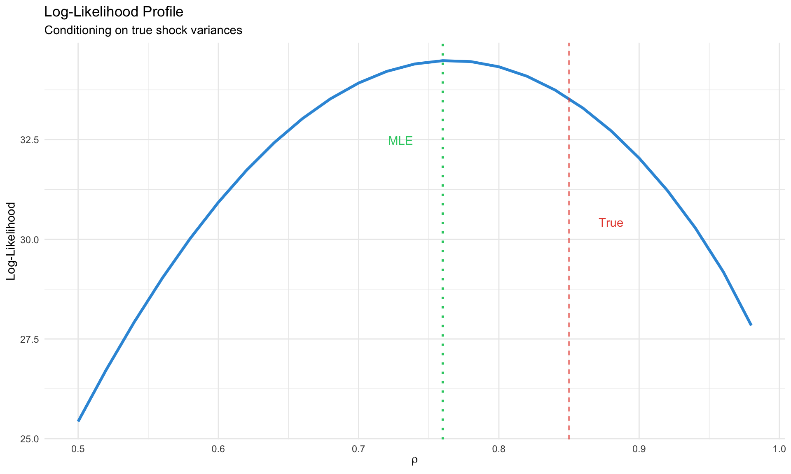

DSGE Estimation
The Kalman Filter, Bayesian Methods, and Model Comparison
From Model to Data
Module 10 showed how to solve DSGE models. Now we estimate them—finding parameter values that make the model consistent with observed data.
NoteThe Estimation Challenge
DSGE models have latent states (unobserved variables like potential output, natural rate) that we must infer while simultaneously estimating parameters.
The Workflow
State Space Representation
After solving the DSGE model (Module 10), we have:
\[ \hat{y}_t = G_x \hat{y}_{t-1} + G_u u_t \]
This is the transition equation. We add an observation equation linking model states to observables:
The State Space Form
\[ \underbrace{s_t = T s_{t-1} + R \eta_t}_{\text{Transition}} \quad \eta_t \sim N(0, Q) \]
\[ \underbrace{y_t = Z s_t + d + \varepsilon_t}_{\text{Observation}} \quad \varepsilon_t \sim N(0, H) \]
| Component | Meaning | From DSGE |
|---|---|---|
| \(s_t\) | State vector (all model variables) | Solution states |
| \(T\) | Transition matrix | \(G_x\) from perturbation |
| \(R\) | Shock impact | \(G_u\) from perturbation |
| \(Q\) | Shock variance-covariance | \(\text{diag}(\sigma_1^2, \ldots, \sigma_k^2)\) |
| \(y_t\) | Observables (data) | GDP growth, inflation, rate |
| \(Z\) | Selection/mapping matrix | Which states are observed |
| \(H\) | Measurement error variance | Often zero or small |
Example: 3-Variable NK Model
Observables: \(y_t = (\Delta \log Y_t, \pi_t, i_t)'\)
States: \(s_t = (\hat{y}_t, \hat{\pi}_t, \hat{i}_t, \hat{a}_t, \hat{\varepsilon}^m_t)'\)
Mapping: \[ Z = \begin{pmatrix} 1 & 0 & 0 & 0 & 0 \\ 0 & 1 & 0 & 0 & 0 \\ 0 & 0 & 1 & 0 & 0 \end{pmatrix} \]
The first three states are directly observed (up to measurement error).
The Kalman Filter
The Kalman filter recursively computes the likelihood \(L(\theta | Y)\) where \(\theta\) are the DSGE parameters.
The Algorithm
For each time period \(t = 1, \ldots, T\):
Step 1: Prediction
Given information up to \(t-1\): \[ s_{t|t-1} = T s_{t-1|t-1} \] \[ P_{t|t-1} = T P_{t-1|t-1} T' + R Q R' \]
where \(P_{t|t-1}\) is the variance of the state forecast.
Step 2: Innovation
Compare prediction to actual observation: \[ v_t = y_t - Z s_{t|t-1} - d \] \[ F_t = Z P_{t|t-1} Z' + H \]
\(v_t\) is the forecast error and \(F_t\) is its variance.
Step 3: Update
Incorporate new observation: \[ K_t = P_{t|t-1} Z' F_t^{-1} \] \[ s_{t|t} = s_{t|t-1} + K_t v_t \] \[ P_{t|t} = (I - K_t Z) P_{t|t-1} \]
\(K_t\) is the Kalman gain—how much to adjust the state given the forecast error.
Step 4: Likelihood Contribution
\[ \log L_t = -\frac{n_y}{2} \log(2\pi) - \frac{1}{2} \log|F_t| - \frac{1}{2} v_t' F_t^{-1} v_t \]
Total log-likelihood: \[ \log L(\theta | Y) = \sum_{t=1}^{T} \log L_t \]
Code
# Implement Kalman filter
kalman_filter <- function(y, T_mat, R_mat, Z_mat, Q_mat, H_mat = NULL) {
# y: T_obs × n_y matrix of observations
# T_mat: n_s × n_s transition matrix
# R_mat: n_s × n_u shock impact matrix
# Z_mat: n_y × n_s observation matrix
# Q_mat: n_u × n_u shock variance
# H_mat: n_y × n_y measurement error variance (optional)
T_obs <- nrow(y)
n_s <- nrow(T_mat)
n_y <- nrow(Z_mat)
if (is.null(H_mat)) H_mat <- diag(0.0001, n_y)
# Initialize at unconditional distribution
s_filt <- matrix(0, T_obs, n_s)
P_filt <- array(0, c(n_s, n_s, T_obs))
# Unconditional variance: vec(P) = (I - T⊗T)^{-1} vec(RQR')
RQR <- R_mat %*% Q_mat %*% t(R_mat)
P_init <- matrix(solve(diag(n_s^2) - kronecker(T_mat, T_mat)) %*% as.vector(RQR), n_s, n_s)
P_init <- (P_init + t(P_init)) / 2 # ensure symmetry
s_curr <- rep(0, n_s)
P_curr <- P_init
loglik <- 0
innovations <- matrix(0, T_obs, n_y)
F_series <- array(0, c(n_y, n_y, T_obs))
for (t in 1:T_obs) {
# Prediction
s_pred <- T_mat %*% s_curr
P_pred <- T_mat %*% P_curr %*% t(T_mat) + RQR
# Innovation
v_t <- y[t, ] - Z_mat %*% s_pred
F_t <- Z_mat %*% P_pred %*% t(Z_mat) + H_mat
F_t <- (F_t + t(F_t)) / 2 # ensure symmetry
# Log-likelihood
det_F <- det(F_t)
if (det_F <= 0) {
loglik <- -1e10
break
}
F_inv <- solve(F_t)
loglik <- loglik - 0.5 * (n_y * log(2*pi) + log(det_F) + t(v_t) %*% F_inv %*% v_t)
# Update
K_t <- P_pred %*% t(Z_mat) %*% F_inv
s_curr <- as.vector(s_pred + K_t %*% v_t)
P_curr <- P_pred - K_t %*% Z_mat %*% P_pred
# Store
s_filt[t, ] <- s_curr
P_filt[, , t] <- P_curr
innovations[t, ] <- v_t
F_series[, , t] <- F_t
}
list(
loglik = as.numeric(loglik),
states = s_filt,
P = P_filt,
innovations = innovations,
F = F_series
)
}
# Simulate a simple state-space model
T_obs <- 100
n_s <- 2 # states
n_y <- 2 # observables
n_u <- 2 # shocks
# True parameters
rho <- 0.9
sigma <- 0.1
T_true <- matrix(c(rho, 0, 0.1, rho), 2, 2)
R_true <- diag(2)
Z_true <- diag(2)
Q_true <- diag(sigma^2, 2)
H_true <- diag(0.01, 2)
# Simulate data
s_true <- matrix(0, T_obs, n_s)
y_obs <- matrix(0, T_obs, n_y)
for (t in 2:T_obs) {
s_true[t, ] <- as.vector(T_true %*% s_true[t-1, ]) + as.vector(rmvnorm(1, sigma = Q_true))
}
for (t in 1:T_obs) {
y_obs[t, ] <- as.vector(Z_true %*% s_true[t, ]) + as.vector(rmvnorm(1, sigma = H_true))
}
# Run Kalman filter
kf_result <- kalman_filter(y_obs, T_true, R_true, Z_true, Q_true, H_true)
# Plot filtered vs true states
states_df <- tibble(
t = rep(1:T_obs, 4),
value = c(s_true[, 1], kf_result$states[, 1], s_true[, 2], kf_result$states[, 2]),
type = rep(c("True", "Filtered", "True", "Filtered"), each = T_obs),
state = rep(c("State 1", "State 1", "State 2", "State 2"), each = T_obs)
)
ggplot(states_df, aes(x = t, y = value, color = type, linetype = type)) +
geom_line(linewidth = 0.8) +
facet_wrap(~state, scales = "free_y") +
scale_color_manual(values = c("#3498db", "#e74c3c")) +
scale_linetype_manual(values = c("solid", "dashed")) +
labs(title = "Kalman Filter: Filtered vs True States",
x = "Time", y = "Value", color = NULL, linetype = NULL) +
theme_minimal() +
theme(legend.position = "bottom")
Kalman Gain Intuition
The Kalman gain \(K_t\) balances:
- Model confidence (small \(P_{t|t-1}\)) → trust the prediction, small \(K_t\)
- Observation precision (small \(H\)) → trust the data, large \(K_t\)
Code
# Show how Kalman gain evolves
gain_df <- tibble(
t = 1:T_obs,
K_11 = sapply(1:T_obs, function(i) {
P <- kf_result$P[,,i]
F <- kf_result$F[,,i]
(P %*% t(Z_true) %*% solve(F))[1,1]
})
)
ggplot(gain_df, aes(x = t, y = K_11)) +
geom_line(color = "#3498db", linewidth = 1) +
geom_hline(yintercept = mean(gain_df$K_11[(T_obs-20):T_obs]),
linetype = "dashed", color = "#e74c3c") +
labs(title = "Kalman Gain Over Time",
subtitle = "Converges to steady state as filter 'learns' the process",
x = "Time", y = expression(K[11])) +
theme_minimal()
Maximum Likelihood Estimation
Given the Kalman filter likelihood, we can maximize:
\[ \hat{\theta}_{ML} = \arg\max_\theta \log L(\theta | Y) \]
The Challenge
For each candidate \(\theta\):
- Solve the DSGE → get \(T(\theta), R(\theta)\)
- Run Kalman filter → get \(\log L(\theta | Y)\)
This is computationally expensive. Gradient-free optimizers (Nelder-Mead, simulated annealing) or specialized methods (csminwel) are common.
Code
# ML estimation for simple AR(1) state space
# y_t = s_t + e_t, s_t = rho * s_{t-1} + eta_t
ml_loglik <- function(theta, y) {
rho <- theta[1]
sigma_eta <- exp(theta[2])
sigma_e <- exp(theta[3])
# Stationarity check
if (abs(rho) >= 1) return(-1e10)
T_mat <- matrix(rho, 1, 1)
R_mat <- matrix(1, 1, 1)
Z_mat <- matrix(1, 1, 1)
Q_mat <- matrix(sigma_eta^2, 1, 1)
H_mat <- matrix(sigma_e^2, 1, 1)
y_mat <- matrix(y, ncol = 1)
kf <- kalman_filter(y_mat, T_mat, R_mat, Z_mat, Q_mat, H_mat)
return(kf$loglik)
}
# Simulate data from known parameters
rho_true <- 0.85
sigma_eta_true <- 0.15
sigma_e_true <- 0.05
y_sim <- numeric(100)
s_sim <- numeric(100)
for (t in 2:100) {
s_sim[t] <- rho_true * s_sim[t-1] + rnorm(1, 0, sigma_eta_true)
y_sim[t] <- s_sim[t] + rnorm(1, 0, sigma_e_true)
}
# Grid search for illustration
rho_grid <- seq(0.5, 0.99, 0.02)
loglik_grid <- sapply(rho_grid, function(r) {
ml_loglik(c(r, log(sigma_eta_true), log(sigma_e_true)), y_sim)
})
grid_df <- tibble(rho = rho_grid, loglik = loglik_grid)
ggplot(grid_df, aes(x = rho, y = loglik)) +
geom_line(color = "#3498db", linewidth = 1.2) +
geom_vline(xintercept = rho_true, linetype = "dashed", color = "#e74c3c") +
geom_vline(xintercept = rho_grid[which.max(loglik_grid)],
linetype = "dotted", color = "#2ecc71", linewidth = 1) +
annotate("text", x = rho_true + 0.03, y = min(loglik_grid) + 5,
label = "True", color = "#e74c3c") +
annotate("text", x = rho_grid[which.max(loglik_grid)] - 0.03,
y = max(loglik_grid) - 2, label = "MLE", color = "#2ecc71") +
labs(title = "Log-Likelihood Profile",
subtitle = "Conditioning on true shock variances",
x = expression(rho), y = "Log-Likelihood") +
theme_minimal()
Standard Errors
At the MLE, compute the Hessian (matrix of second derivatives):
\[ \hat{V}(\hat{\theta}) = -H^{-1}, \quad H_{ij} = \frac{\partial^2 \log L}{\partial \theta_i \partial \theta_j}\bigg|_{\hat{\theta}} \]
Standard errors: \(\text{SE}(\hat{\theta}_j) = \sqrt{\hat{V}_{jj}}\)
Bayesian Estimation
The Bayesian approach combines prior beliefs with data:
\[ \underbrace{p(\theta | Y)}_{\text{posterior}} \propto \underbrace{L(Y | \theta)}_{\text{likelihood}} \times \underbrace{p(\theta)}_{\text{prior}} \]
Why Bayesian for DSGE?
| Advantage | Explanation |
|---|---|
| Regularization | Priors prevent extreme/implausible estimates |
| Identification | Informative priors help weakly identified parameters |
| Full uncertainty | Posterior distribution, not just point estimate |
| Model comparison | Marginal likelihood is natural Bayesian output |
| Small samples | Works well with limited macro data |
Prior Selection
Priors should reflect economic knowledge without being too restrictive.
Standard Prior Distributions
| Parameter Type | Distribution | Rationale |
|---|---|---|
| Persistence (\(\rho\)) | Beta(a, b) | Bounded [0, 1] |
| Elasticities | Gamma(a, b) | Positive, right-skewed |
| Fractions (\(\alpha, \theta\)) | Beta(a, b) | Bounded [0, 1] |
| Shock std (\(\sigma\)) | Inv-Gamma(s, \(\nu\)) | Positive, proper |
| Policy weights (\(\phi_\pi\)) | Gamma or Normal | Positive or unrestricted |
| Discount factor (\(\beta\)) | Beta near 0.99 | Close to 1 |
Example: NK Model Priors
Code
prior_table <- tibble(
Parameter = c("$\\beta$", "$\\sigma$", "$\\phi$", "$\\theta$", "$\\phi_\\pi$",
"$\\phi_y$", "$\\rho_i$", "$\\rho_a$", "$\\sigma_a$", "$\\sigma_m$"),
Distribution = c("Beta", "Gamma", "Gamma", "Beta", "Gamma",
"Gamma", "Beta", "Beta", "Inv-Gamma", "Inv-Gamma"),
Mean = c(0.99, 1.5, 2.0, 0.75, 1.5, 0.125, 0.8, 0.9, 0.01, 0.0025),
SD = c(0.002, 0.25, 0.5, 0.1, 0.25, 0.05, 0.1, 0.05, 2, 2),
Interpretation = c("Discount factor", "Risk aversion", "Frisch elasticity",
"Calvo parameter", "Taylor: inflation", "Taylor: output",
"Rate smoothing", "Tech persistence", "Tech shock std", "MP shock std")
)
knitr::kable(prior_table, caption = "Standard NK Model Priors", escape = FALSE)| Parameter | Distribution | Mean | SD | Interpretation |
|---|---|---|---|---|
| \(\beta\) | Beta | 0.9900 | 0.002 | Discount factor |
| \(\sigma\) | Gamma | 1.5000 | 0.250 | Risk aversion |
| \(\phi\) | Gamma | 2.0000 | 0.500 | Frisch elasticity |
| \(\theta\) | Beta | 0.7500 | 0.100 | Calvo parameter |
| \(\phi_\pi\) | Gamma | 1.5000 | 0.250 | Taylor: inflation |
| \(\phi_y\) | Gamma | 0.1250 | 0.050 | Taylor: output |
| \(\rho_i\) | Beta | 0.8000 | 0.100 | Rate smoothing |
| \(\rho_a\) | Beta | 0.9000 | 0.050 | Tech persistence |
| \(\sigma_a\) | Inv-Gamma | 0.0100 | 2.000 | Tech shock std |
| \(\sigma_m\) | Inv-Gamma | 0.0025 | 2.000 | MP shock std |
Code
# Plot some priors
x_grid <- seq(0, 3, 0.01)
prior_df <- bind_rows(
tibble(x = x_grid, density = dgamma(x_grid, 4, 4/1.5), param = "phi_pi (Gamma)"),
tibble(x = seq(0, 1, 0.01), density = dbeta(seq(0, 1, 0.01), 5, 2),
param = "rho_i (Beta)"),
tibble(x = seq(0, 1, 0.01), density = dbeta(seq(0, 1, 0.01), 5, 1.67),
param = "theta (Beta)")
)
ggplot(prior_df, aes(x = x, y = density, fill = param)) +
geom_area(alpha = 0.5) +
facet_wrap(~param, scales = "free") +
labs(title = "Prior Distributions",
x = "Parameter Value", y = "Density") +
theme_minimal() +
theme(legend.position = "none")
Metropolis-Hastings MCMC
The posterior \(p(\theta | Y)\) is rarely available analytically. We use Markov Chain Monte Carlo (MCMC) to sample from it.
The Algorithm
Initialize: Start at some \(\theta^{(0)}\) (often the posterior mode)
Propose: Draw candidate \(\theta^* \sim q(\theta^* | \theta^{(g)})\)
- Common: Random walk \(\theta^* = \theta^{(g)} + \varepsilon\), \(\varepsilon \sim N(0, c \cdot \Sigma)\)
- \(\Sigma\) = inverse Hessian at mode; \(c\) = scaling factor
Accept/Reject: \[ \alpha = \min\left(1, \frac{p(\theta^* | Y)}{p(\theta^{(g)} | Y)}\right) = \min\left(1, \frac{L(Y|\theta^*) p(\theta^*)}{L(Y|\theta^{(g)}) p(\theta^{(g)})}\right) \]
- Draw \(u \sim \text{Uniform}(0, 1)\)
- If \(u < \alpha\): accept \(\theta^{(g+1)} = \theta^*\)
- Else: reject \(\theta^{(g+1)} = \theta^{(g)}\)
Repeat for \(G\) draws; discard first \(B\) as burn-in
Code
# Simple MH for AR(1) model
mh_sampler <- function(y, n_draw = 5000, n_burn = 1000, c_scale = 0.3) {
# Log-posterior (log-likelihood + log-prior)
log_posterior <- function(theta) {
rho <- theta[1]
log_sigma <- theta[2]
# Prior: rho ~ Beta(5, 2) mapped to [0,1], sigma ~ InvGamma(2, 0.1)
if (rho <= 0 || rho >= 1) return(-Inf)
sigma <- exp(log_sigma)
if (sigma <= 0) return(-Inf)
log_prior <- dbeta(rho, 5, 2, log = TRUE) +
dgamma(1/sigma^2, 2, 0.1, log = TRUE) - 2 * log(sigma)
# Likelihood via Kalman filter
T_mat <- matrix(rho, 1, 1)
R_mat <- matrix(1, 1, 1)
Z_mat <- matrix(1, 1, 1)
Q_mat <- matrix(sigma^2, 1, 1)
H_mat <- matrix(0.01, 1, 1)
y_mat <- matrix(y, ncol = 1)
kf <- kalman_filter(y_mat, T_mat, R_mat, Z_mat, Q_mat, H_mat)
return(kf$loglik + log_prior)
}
# Initialize
theta_curr <- c(0.8, log(0.1))
log_post_curr <- log_posterior(theta_curr)
# Proposal covariance
Sigma_prop <- diag(c(0.02, 0.1)^2) * c_scale
# Storage
draws <- matrix(0, n_draw, 2)
n_accept <- 0
for (g in 1:(n_draw + n_burn)) {
# Propose
theta_star <- rmvnorm(1, theta_curr, Sigma_prop)[1,]
# Compute acceptance probability
log_post_star <- log_posterior(theta_star)
log_alpha <- log_post_star - log_post_curr
# Accept/reject
if (log(runif(1)) < log_alpha) {
theta_curr <- theta_star
log_post_curr <- log_post_star
if (g > n_burn) n_accept <- n_accept + 1
}
# Store
if (g > n_burn) {
draws[g - n_burn, ] <- theta_curr
}
}
list(
draws = draws,
acceptance_rate = n_accept / n_draw
)
}
# Run MH
mh_result <- mh_sampler(y_sim, n_draw = 3000, n_burn = 1000)
cat("Acceptance rate:", round(mh_result$acceptance_rate, 3), "\n")Acceptance rate: 0.793 Code
# Trace plots
trace_df <- tibble(
iteration = rep(1:3000, 2),
value = c(mh_result$draws[, 1], exp(mh_result$draws[, 2])),
parameter = rep(c("rho", "sigma"), each = 3000)
)
ggplot(trace_df, aes(x = iteration, y = value)) +
geom_line(alpha = 0.5, color = "#3498db") +
facet_wrap(~parameter, scales = "free_y") +
geom_hline(data = tibble(parameter = c("rho", "sigma"),
true = c(rho_true, sigma_eta_true)),
aes(yintercept = true), color = "#e74c3c", linetype = "dashed") +
labs(title = "MCMC Trace Plots",
subtitle = "Red dashed = true value",
x = "Iteration", y = "Value") +
theme_minimal()
Tuning the Proposal
Target acceptance rate: 20-30% for random walk MH
| Acceptance Rate | Diagnosis | Action |
|---|---|---|
| < 10% | Proposals too bold | Decrease \(c\) |
| 20-30% | Optimal | Keep |
| > 50% | Proposals too timid | Increase \(c\) |
Dynare’s mh_jscale parameter controls this.
Dynare Estimation
Dynare automates DSGE estimation with the estimation command.
Complete Example: 3-Equation NK Model
%% nk_estimation.mod
%% Preamble
var y pi i a eps_m;
varexo eta_a eta_m;
parameters BETA SIGMA KAPPA PHI_PI PHI_Y RHO_I RHO_A;
%% Calibrated parameters
BETA = 0.99;
SIGMA = 1;
%% Model
model(linear);
% IS curve
y = y(+1) - (1/SIGMA) * (i - pi(+1));
% Phillips curve
pi = BETA * pi(+1) + KAPPA * y;
% Taylor rule
i = RHO_I * i(-1) + (1 - RHO_I) * (PHI_PI * pi + PHI_Y * y) + eps_m;
% Shocks
a = RHO_A * a(-1) + eta_a; % technology (affects natural rate)
eps_m = eta_m; % monetary policy
end;
%% Steady state
initval;
y = 0; pi = 0; i = 0; a = 0; eps_m = 0;
end;
steady;
check;
%% Shocks
shocks;
var eta_a; stderr 0.01;
var eta_m; stderr 0.0025;
end;
%% Observables (must match data columns)
varobs y pi i;
%% Estimated parameters with priors
estimated_params;
% Structural
KAPPA, gamma_pdf, 0.1, 0.05;
% Policy rule
PHI_PI, gamma_pdf, 1.5, 0.25;
PHI_Y, gamma_pdf, 0.125, 0.05;
RHO_I, beta_pdf, 0.8, 0.1;
% Shock processes
RHO_A, beta_pdf, 0.9, 0.05;
stderr eta_a, inv_gamma_pdf, 0.01, 2;
stderr eta_m, inv_gamma_pdf, 0.0025, 2;
end;
%% Estimation
estimation(
datafile = 'us_macro_data.csv',
first_obs = 1,
mode_compute = 4, % csminwel optimizer
mode_check, % plot likelihood around mode
mh_replic = 100000, % MH draws
mh_nblocks = 2, % parallel chains
mh_jscale = 0.3, % proposal scaling
mh_drop = 0.5, % burn-in fraction
bayesian_irf, % posterior IRFs
smoother % smoothed states
);Key Estimation Options
| Option | Purpose | Typical Value |
|---|---|---|
mode_compute |
Optimizer for mode | 4 (csminwel) or 9 (dynare default) |
mode_check |
Plot likelihood around mode | Include |
mh_replic |
MH draws | 100,000-500,000 |
mh_nblocks |
Parallel chains | 2-4 |
mh_jscale |
Proposal scaling | 0.2-0.5 (tune for 25% acceptance) |
mh_drop |
Burn-in fraction | 0.5 |
bayesian_irf |
Compute posterior IRFs | Include |
smoother |
Compute smoothed states | Include |
Dynare Output
After estimation, Dynare produces:
| Output | Location | Content |
|---|---|---|
| Posterior mode | oo_.posterior_mode |
Point estimates |
| Posterior draws | oo_.posterior_draws |
MCMC chain |
| Prior/posterior plots | *_PriorPosterior.pdf |
Comparison |
| MCMC diagnostics | *_MCMCdiagnostics.pdf |
Convergence |
| IRFs | oo_.irfs |
Impulse responses |
| Smoothed variables | oo_.SmoothedVariables |
Filtered states |
| Marginal likelihood | oo_.MarginalDensity |
Model comparison |
Model Comparison
Marginal Likelihood
The marginal likelihood (or marginal data density) is:
\[ p(Y | M) = \int p(Y | \theta, M) p(\theta | M) d\theta \]
This integrates over parameter uncertainty, automatically penalizing complexity.
Bayes Factors
Compare models \(M_1\) vs \(M_2\):
\[ BF_{12} = \frac{p(Y | M_1)}{p(Y | M_2)} \]
| \(\log BF_{12}\) | Evidence for \(M_1\) |
|---|---|
| < 0 | Favors \(M_2\) |
| 0-1 | Weak |
| 1-3 | Positive |
| 3-5 | Strong |
| > 5 | Decisive |
Computing Marginal Likelihood
Laplace approximation (fast, less accurate): \[ \log p(Y | M) \approx \log p(Y | \hat{\theta}) + \log p(\hat{\theta}) + \frac{k}{2} \log(2\pi) - \frac{1}{2} \log|H| \]
Modified harmonic mean (Dynare default with MCMC): \[ \hat{p}(Y | M) = \left[\frac{1}{G} \sum_{g=1}^G \frac{f(\theta^{(g)})}{\tilde{p}(\theta^{(g)} | Y)}\right]^{-1} \]
where \(f\) is a truncated Normal centered at the posterior mode.
Code
# Simulate comparison of two models
# Model 1: AR(1) with rho = 0.9
# Model 2: AR(1) with rho = 0.5 (misspecified)
# Approximate marginal likelihoods via Laplace
laplace_ml <- function(y, rho_prior_mean) {
# Mode finding (simplified)
mle_rho <- cor(y[-1], y[-length(y)])
mle_sigma <- sd(y - c(0, mle_rho * y[-length(y)]))
# Log-likelihood at mode
T_mat <- matrix(mle_rho, 1, 1)
R_mat <- matrix(1, 1, 1)
Z_mat <- matrix(1, 1, 1)
Q_mat <- matrix(mle_sigma^2, 1, 1)
H_mat <- matrix(0.01, 1, 1)
y_mat <- matrix(y, ncol = 1)
kf <- kalman_filter(y_mat, T_mat, R_mat, Z_mat, Q_mat, H_mat)
log_lik <- kf$loglik
# Log-prior at mode (tighter prior centered at rho_prior_mean)
log_prior <- dnorm(mle_rho, rho_prior_mean, 0.1, log = TRUE)
# Laplace approximation (simplified)
k <- 2 # number of parameters
log_det_H <- 4 # approximate
ml <- log_lik + log_prior + k/2 * log(2*pi) - 0.5 * log_det_H
return(ml)
}
# Data generated from rho = 0.85
ml_correct <- laplace_ml(y_sim, 0.85)
ml_misspec <- laplace_ml(y_sim, 0.5)
log_bf <- ml_correct - ml_misspec
cat("Log Bayes Factor (correct vs misspecified):", round(log_bf, 2), "\n")Log Bayes Factor (correct vs misspecified): 1.58 Code
Interpretation: Positive evidence Diagnostics
MCMC Convergence
Trace Plots
Chains should: - Explore the full parameter space - Not get stuck in one region - Look like “hairy caterpillars” (good mixing)
Gelman-Rubin Statistic
For multiple chains, compare within-chain vs between-chain variance:
\[ \hat{R} = \sqrt{\frac{\hat{V}(\theta)}{W}} \]
Rule of thumb: \(\hat{R} < 1.1\) (ideally \(< 1.05\))
Effective Sample Size
Accounts for autocorrelation in the chain:
\[ \text{ESS} = \frac{n}{1 + 2\sum_{k=1}^\infty \rho_k} \]
Rule of thumb: ESS > 400 for reliable posterior summaries
Code
# Autocorrelation plot
acf_df <- tibble(
lag = 0:30,
acf = acf(mh_result$draws[, 1], lag.max = 30, plot = FALSE)$acf[, 1, 1]
)
p1 <- ggplot(acf_df, aes(x = lag, y = acf)) +
geom_bar(stat = "identity", fill = "#3498db", alpha = 0.7) +
geom_hline(yintercept = c(-1.96/sqrt(3000), 1.96/sqrt(3000)),
linetype = "dashed", color = "#e74c3c") +
labs(title = "Autocorrelation (rho)", x = "Lag", y = "ACF") +
theme_minimal()
# Running mean
running_mean <- cumsum(mh_result$draws[, 1]) / (1:3000)
p2 <- ggplot(tibble(iter = 1:3000, mean = running_mean), aes(x = iter, y = mean)) +
geom_line(color = "#3498db") +
geom_hline(yintercept = rho_true, linetype = "dashed", color = "#e74c3c") +
labs(title = "Running Mean (rho)", x = "Iteration", y = "Cumulative Mean") +
theme_minimal()
gridExtra::grid.arrange(p1, p2, ncol = 2)
Prior vs Posterior
A key diagnostic: did the data inform the parameter?
| Pattern | Interpretation |
|---|---|
| Posterior ≠ Prior | Data is informative |
| Posterior ≈ Prior | Weak identification or uninformative data |
| Posterior outside prior support | Prior may be misspecified |
Code
# Compare prior and posterior for rho
x_grid <- seq(0.5, 1, 0.01)
prior_dens <- dbeta(x_grid, 5, 2)
posterior_dens <- density(mh_result$draws[, 1], from = 0.5, to = 1)
pp_df <- bind_rows(
tibble(x = x_grid, density = prior_dens / max(prior_dens), type = "Prior"),
tibble(x = posterior_dens$x, density = posterior_dens$y / max(posterior_dens$y),
type = "Posterior")
)
ggplot(pp_df, aes(x = x, y = density, fill = type)) +
geom_area(alpha = 0.5, position = "identity") +
geom_vline(xintercept = rho_true, linetype = "dashed", color = "black") +
scale_fill_manual(values = c("#3498db", "#e74c3c")) +
labs(title = "Prior vs Posterior: rho",
subtitle = "Black dashed = true value",
x = expression(rho), y = "Density (normalized)", fill = NULL) +
theme_minimal() +
theme(legend.position = "bottom")
Identification
Local identification: Can different \(\theta\) values produce the same observables?
Dynare’s identification command checks: 1. Rank of the Jacobian at the mode 2. Which parameters are weakly identified
Symptoms of weak identification: - Flat likelihood surface - Prior ≈ Posterior - High posterior correlation between parameters
Summary
| Concept | Key Insight |
|---|---|
| State space | DSGE solution → transition + observation equations |
| Kalman filter | Recursive likelihood via prediction + update |
| Maximum likelihood | Point estimate, fast but no uncertainty |
| Bayesian | Full posterior, regularization, model comparison |
| Metropolis-Hastings | Sample from posterior via accept/reject |
| Marginal likelihood | Integrate out parameters for model comparison |
| Diagnostics | Check convergence, identification, prior vs posterior |
TipPractical Workflow
- Start with ML mode to find a good starting point
- Check identification before running full MCMC
- Run short chains first to tune
mh_jscale - Multiple chains for convergence diagnostics
- Compare prior/posterior to assess informativeness
- Model comparison only with converged chains
Key References
Estimation
- An & Schorfheide (2007) “Bayesian Analysis of DSGE Models” Econometric Reviews — Standard reference
- Herbst & Schorfheide (2016) Bayesian Estimation of DSGE Models — Modern textbook
- Del Negro & Schorfheide (2011) “Bayesian Macroeconometrics” Handbook — Survey chapter
Kalman Filter
- Hamilton (1994) Time Series Analysis Ch. 13 — Classic treatment
- Durbin & Koopman (2012) Time Series Analysis by State Space Methods — Comprehensive
MCMC
- Chib & Greenberg (1995) “Understanding the Metropolis-Hastings Algorithm” American Statistician
- Geweke (1999) “Using Simulation Methods for Bayesian Econometric Models” — Practical guide
Model Comparison
- Geweke (1999) “Bayesian Analysis of the Multinomial Probit Model” — Marginal likelihood computation
- Del Negro & Schorfheide (2004) “Priors from General Equilibrium Models for VARs” — DSGE-VAR
Software
- Adjemian et al. “Dynare” — Standard solver/estimator
- Herbst & Schorfheide companion — MATLAB/Python code